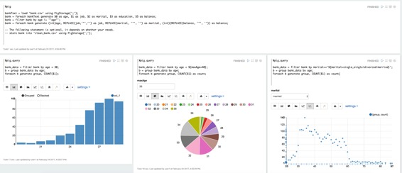

Pig 解释器
原文链接 : http://zeppelin.apache.org/docs/0.7.2/interpreter/pig.html
译文链接 : http://www.apache.wiki/pages/viewpage.action?pageId=10030871
概述
Apache Pig是分析大型数据集的平台，包括用于表达数据分析程序的高级语言，以及用于评估这些程序的基础设施。Pig程序的显着特点在于它们的结构适用于大量的并行化，从而使它们能够处理非常大的数据集。
支持的解释器类型
-
%pig.script（默认的Pig解释器，所以你可以使用%pig）%pig.script就像猪unt壳。您可以在Pig grunt shell中运行的任何操作都可以在解释器中运行%pig.script，它用于运行Pig脚本，您不需要可视化数据，适合数据发送。 -
%pig.query%pig.query与之相比稍有不同%pig.script。它用于通过猪拉丁进行探索性数据分析，您可以利用齐柏林的可视化功能。还有就是在两者之间的最后一条语句2个细微差别%pig.script和%pig.query- 最后一句话中没有猪别名
%pig.query（见下面的例子）。 - 最后一个声明必须单行
%pig.query
- 最后一句话中没有猪别名
支持运行时模式
- 本地
- MapReduce的
- Tez_Local（仅支持Tez 0.7）
- Tez（仅支持Tez 0.7）
如何使用
如何设置Pig
-
本地模式
在本地模式下不需要做任何事情
-
MapReduce模式
需要指定HADOOP_CONF_DIR
ZEPPELIN_HOME/conf/zeppelin-env.sh。 -
Tez本地模式
tez本地模式不需要做任何事情
-
Tez模式
需要指定HADOOP_CONF_DIR和TEZ_CONF_DIR
ZEPPELIN_HOME/conf/zeppelin-env.sh。
如何配置解释器
在口译员菜单中，您必须创建一个新的Pig解释器。默认情况下，Pig解释器具有以下属性。您可以在这里设置任何Pig属性，将其传递给Pig引擎。（如tez.queue.name＆mapred.job.queue.name）。此外，我们使用段落标题作为作业名称（如果存在），否则使用猪脚本的最后一行。所以你可以使用它来查找在YARN RM UI中运行的应用程序。
| 属性 | 默认 | 描述 |
|---|---|---|
| zeppelin.pig.execType | mapreduce | 猪运行时的执行模式。本地| mapreduce | tez_local | TEZ |
| zeppelin.pig.includeJobStats | false | 是否显示jobStats信息 %pig.script |
| zeppelin.pig.maxResult | 1000 | 最大行号显示在 %pig.query |
| tez.queue.name | default | tez引擎的队列名称 |
| mapred.job.queue.name | default | mapreduce引擎的队列名称 |
案例
pig
%pig
bankText = load 'bank.csv' using PigStorage(';');
bank = foreach bankText generate $0 as age, $1 as job, $2 as marital, $3 as education, $5 as balance;
bank = filter bank by age != '"age"';
bank = foreach bank generate (int)age, REPLACE(job,'"','') as job, REPLACE(marital, '"', '') as marital, (int)(REPLACE(balance, '"', '')) as balance;
store bank into 'clean_bank.csv' using PigStorage(';'); -- this statement is optional, it just show you that most of time %pig.script is used for data munging before querying the data.
pig.query
获取年龄小于30的每个年龄的数量
%pig.query
bank_data = filter bank by age < 30;
b = group bank_data by age;
foreach b generate group, COUNT($1);
与上述相同，但使用动态文本形式，以便使用可以在文本框中指定变量maxAge。（见下面的屏幕截图）。动态形式是齐柏林很酷的功能，您可以参考此[链接](http://zeppelin.apache.org/docs/0.7.1/interpreter/(../manual/dynamicform.html)）了解详情。
%pig.query
bank_data = filter bank by age < ${maxAge=40};
b = group bank_data by age;
foreach b generate group, COUNT($1) as count;
获取具体婚姻类型的每个年龄的数量，也在这里使用动态表单。用户可以在下拉列表中选择婚姻类型（见下面的屏幕截图）。
%pig.query
bank_data = filter bank by marital=='${marital=single,single|divorced|married}';
b = group bank_data by age;
foreach b generate group, COUNT($1) as count;
以上示例在Zeppelin的Pig教程中，您可以查看详细信息。这是截图。

数据共享%pig和%pig.query，这样就可以做一些常见的工作%pig，并以此为基础进行的数据不同种类的查询%pig。此外，我们建议您明确指定别名，以便可视化文件正确显示列名称。在上面的例子2和3中%pig.query，我们命名COUNT($1)为count。如果你不这样做，那么我们将使用position来命名它。例如在上面的第一个例子中%pig.query，我们将用col_1图表来表示COUNT($1)。